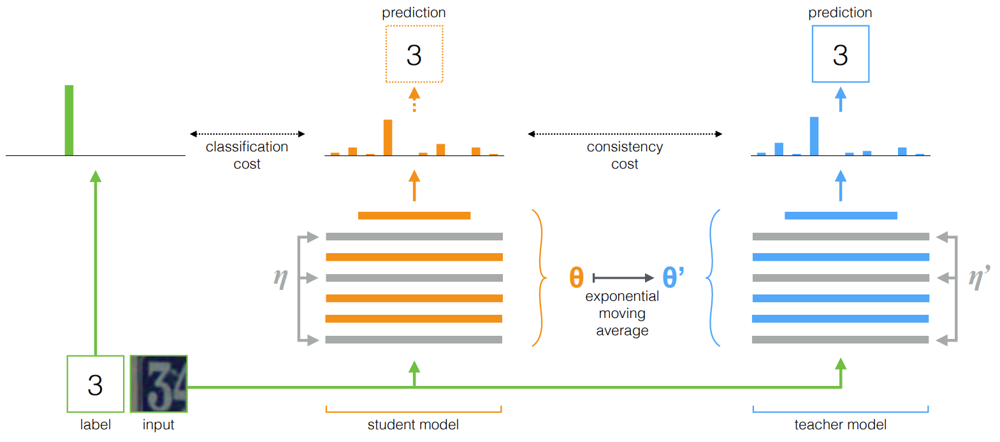

半监督分割
半监督分割方法串讲

当前针对半监督语义分割领域，在不同数据集上，SOTA的方法主要包含CutMix, ClassMix以及s4GAN_MLMT(数据来源 paperWithCode)，backbone主要采用DeepLab系列(v3+或v2).
Consistency Regularization: predictions for unlabelled data should be invariant to perturbations.
最大化类内embedding的相似度(multi domain).
-
分割backbone:
a. DeepLab系列 - V3: atrous convolutions + spatial pyramid pooling
b. Encoder-decoder networks 系列 - skip connections
1 CutMix ( Github)
French G , Laine S , Aila T , et al. Semi-supervised semantic segmentation needs strong, varied perturbations[J]. 2019.
#Network Regularization, #Augmentation Strategies, #Mean Teacher Framework
1.1 前言摘录
网络正则化(Network Regularization)的思想在于要求网络对不同形式扰动后图片(未标注)输出一致性的预测结果(更像是一种数据增广技术).
平滑性假设:相近的图片应该具备相同的标注；聚类假设: 决策面应该位于数据分布密度相对较低的区域；
-
MixUp, Cutout以及CutMix
-
MixUp: The inputs and target labels of two randomly chosen examples are blended using a randomly chosen factor. 将两张图片进行组合，例如$C=\alpha{A}+(1-\alpha){B}$
-
Cutout: Augment an image by masking a rectangular region to zero. 将图片的部分区域赋值为0.
-
CutMix: combines aspects of MixUp and CutOut, cutting a rectangular region from image B and pasting it over image A.将图片$B$的部分区域粘贴至图片$A$，形成新的图片。
-
-
Semi-supervised classification(主要讨论基于一致性正则化的半监督分类方法)
组合监督损失(例如交叉熵)和无监督一致性损失
- 不同扰动后预测结果的一致性，当前预测与历史预测的一致性
- Mean teacher model 通过约束学生网络和教师网络预测之间的一致性
-
GAN-based adversarial learning: 最小化真实标签与预测标签分布的差异
-
语义分割中的一致性正则化/约束(Consistency regularization):
分类中的一致性约束：$L_{cons}=d(f_{\theta}(x),f_{\theta}(\hat{x}))$，其中$\hat{x}$为对$x$施加扰动后的图像，$d(·)$为距离度量；
1.2 主要方法
-
模型框架
经典的扰动方式，如裁剪、缩放、旋转和颜色变化等，对输出类造成混淆的几率很低，也被证明对提高自然图像的分类准确率十分有效，同时该方法在一些医学图像分割问题上也有正面的效果，但是它对自然图像的分割任务却无效。
-
Cutout有利于提升网络对各种特征的挖掘利用能力，从而克服图像不同语义成分的多样性组合。
- 生成二值化mask M：随机选择一个矩形范围赋值为0 (随机选择矩形的大小和长宽比)
- 将原始图像$A$输入教师网络$g_{\phi}$来产生伪标签(pseudo-targets)；
- 利用伪标签和扰动后的图像$\hat{x}$来训练学生网络$f_{\theta}$
- 计算一致性损失$L_{cons}=||M{\odot}(f_{\theta}(M{\odot}x)-g_{\phi}(x))||^2$
-
CutMix
- 原始图像$x_a$和$x_b$,Mask $M$ (面积为图像的一半，随机长宽比和位置)
- 将原始图像属于教师网络产生伪标签$g_{\phi}(x_a)$,$g_{\phi}(x_b)$
- 定义$mix(·)$函数：$mix(a,b,M)=(1-M){\odot}a+M{\odot}b$
- 计算一致性损失$L_{cons}=||mix(g_{\phi}(x_a),g_{\phi}(x_b),M)-f_{\theta}(mix(x_a, x_b,M))||^2$
-
1.3 Training Setup
- segmentation networks:
- DeepLab v2 network based on ImageNet pre-trained ResNet-101;
- Dense U-net based on DensetNet-161;
- DeepLab v3+;
- PSPNet
- Loss function:
- 组合监督损失和一致性损失：$L_{sup}+L_{cons}$
- 为保证两项损失keep balance,$L_{cons}$在类别维度求和，在空间维度求平均
2 ClassMix ( Github)
Olsson, Viktor, et al. “ClassMix: Segmentation-Based Data Augmentation for Semi-Supervised Learning.” arXiv preprint arXiv:2007.07936 (2020).
#Network Regularization, #Augmentation Strategies, #Pseudo-labelling, #Mean Teacher Framework
个人感觉方法侧重于实例分割，提出了一种新的数据增广技术ClassMix
2.1 对比CutMix与ClassMix
-
CutMix: randomized rectangular regions are cut out from one image and pasted onto another. (mask-based mixing)
-
ClassMix (a generalization of CutMix): makes use of segmentations to generate the binary masks, instead of rectangles. (segmentation-based augmentation strategies)
在生成mask时区分前景和背景
-
基于DeepLab-v2的ClassMix优于CutMix (但预训练数据不同)，排行榜上未提供ClassMix利用V3+的结果
2.2 方法
-
ClassMix: 如上图所示，输入两张未标注的图片$A$和$B$，输出一张合成图片$X_A$以及其伪标签$Y_A$，将一张图片的前景部分(随机选择分割后的一半数量的类别)粘贴到另一张图片上，伪代码如下图所示：
-
Mean-Teacher Framework(a trend in state-of-the-art semi-supervised learning)
-
损失函数： $$ L(\theta)=E[l(f_{\theta}(X_L),Y_L)+{\lambda}l(f_{\theta}(X_A),Y_A)] $$ 其中$X_L$为数据集中已标注的数据，$X_A$为利用未标注数据根据ClassMix合成的数据，$l(·)$为交叉熵损失
3 S4GAN_MLMT ( Github)
Mittal S , Tatarchenko M , Brox T . Semi-Supervised Semantic Segmentation with High- and Low-level Consistency[J]. IEEE Transactions on Pattern Analysis and Machine Intelligence, 2019, PP(99):1-1.
#dual-branch method, #Mean Teacher Framework, #Network Fusion
3.1 整体框架
-
Dual-branch
- GAN-based branch (Semi-Supervised Semantic Segmentation GAN, s4GAN): 解决分割问题中的低级错误(错误的形状、不准确的边界和不连贯的分割，如上图c)，利用判别器判别真实的标签以及网络预测的标签(feature matching loss)；执行分割任务(像素级分类)
- Semi-supervised multi-label classification branch (Multi-Label Mean Teacher, MLMT): 通过判断图像中出现的所有类别来解决分割中可能出现的标签类别错误(如上图d)；执行图片级分类。
- Network Fusion：融合空间信息和类信息(类似于通道注意力机制)，MLMT分支产生的图像级类别标签用于filter s4GAN的输出。
-
GAN中的discriminator输出可以被当作一个质量评估模块，用于选择最好的预测结果用于后续的self-training；
3.2 方法
-
s4GAN for Semantic Segmentation
分割网络$S$产生分割结果，concatenate原始图像与分割结果送入判别器来对齐真实标注与生成的分割图的分布。
-
训练分割网络$S$: 损失函数包括三部分(交叉熵损失，feature matching损失，self-training损失)，
a. 交叉熵损失用于像素级别分类(分割)
b. feature matching损失$L_{fm}$用于最小化真实标注与预测分割图的mean discrepancy, 其中$D_k(·)$代表判别器第$k$层的输出结果。 $$ L_{fm}=||E_{(x^l,y^l)~D^l}[D_k(y^{l}{\oplus}x^{l})]-E_{x^{u}{~}D^u}[D_k(S(x^{u}){\oplus}x^{u})]|| $$ c. self-training损失用于保持生成器和判别器之间的动态平衡: 为无标注的图片选择生成器(分割网络$S$)输出的最优的分割结果(可以骗过判别器的结果)作为标注来进行监督训练，利用判别器输出的评分做选择(设定阈值) $$ L_{st}= \begin{cases} -\sum_{h,w,c}y^*logS(x^u), &\text{if }D(S(x^u)){\ge}\gamma\
0,& \text{otherwise} \end{cases} $$ 其中，$y^*$是由$S(x^u)$产生的pseudo pixel-wise labels最终，损失函数为： $$ L_S=L_{ce}+{\lambda}_{fm}L_{fm}+{\lambda}_{st}L_{st} $$
-
训练判别网络$D$: $$ L_{D}=E_{(x^l,y^l)~D^l}[\text{log}D(y^{l}{\oplus}x^{l})]+E_{x^{u}{~}D^u}[\text{log}(1-D(S(x^{u}){\oplus}x^{u}))] $$
-
-
Multi-label Semi-supervised Classification
使用 Mean Teacher framework 来进行semi-supervised multilabel image classification.
Student network $G_{\theta}$ 和Teacher network $H_{{\theta}^{'}}$的输入分别为同一张图像的不同扰动后的图像，Teacher network的参数权重是Student network参数的exponential moving average. Student network的损失函数为： $$ L_{MT}=-\sum_{c}z^{l}(c)\text{log}(G_{\theta}(x^l)(c))+\lambda_{cons}||G_{\theta}(x^{'(u,l)}-H_{{\theta}^{'}}(x^{(u,l)})||^2 $$ 其中，$x$和$x^{'}$是同一张图片的不同扰动，$z^{l}$是真实标签的multi-hot vector.
-
Network Fusion
两个branch是分开训练的，最终采用Network Fusion的方式进行融合以得到最后的统一结果,思想为根据预测所得图片上出现的类别概率缩放其对应的分割图上的概率：
$$ S(x)_{c}= \begin{cases} 0, &\text{if }G(x)_c{\le}\tau\
S(x)_c,& \text{otherwise} \end{cases} $$$S(x)_{c}$是第$c$类的分割图,$G(x_c)$是MLMT-branch的soft output, $\tau=0.2$.
Supplement. Mean Teacher Framework
Tarvainen A , Valpola H . Mean teachers are better role models: Weight-averaged consistency targets improve semi-supervised deep learning results. NIPS 2017.
Semi-supervised通常可将数据分为带标签、不带标签两部分。Mean Teacher Framework通常是指对无标签数据进行不同形式的数据增广，分别送入teacher model和student model (teacher model和student model采用相同的模型架构)，约束teacher model和student model对同一样本不同增广形式具有一致性输出。

在训练过程中，首先利用标注数据对student model进行监督学习，随后利用无标注数据来优化teacher model，具体流程如下：
- 利用student模型对图像进行预测得到$y_i$,然后利用teacher model预测得到$y_{i}^{’}$；
- 约束预测结果$y_i$和$y_i^{'}$的一致性($mseLoss$或者$KLLoss$)，并结合有标注的图像计算监督损失($crossEntropyLoss$)，将两部分的损失函数进行梯度反传用于更新student model的参数
- teacher model模型的参数通过计算与student模型参数的滑动平均得到。
$$ \theta_{t}^{'} = {\alpha}{\theta}_{t-1}^{'}+(1-{\alpha}){\theta}_t $$
其中${\theta}_t$为student model的参数，${\theta}_t^{'}$为teacher model的参数。最后teacher model将作为最终的预测模型。
Weiyang Shi
PhD in Pattern Recognition and Intelligent Systems
My research interests include Machine Learning in Medical Image Analysis, Computational Psychiatry, and Brain-inspired Artificial Intelligence.